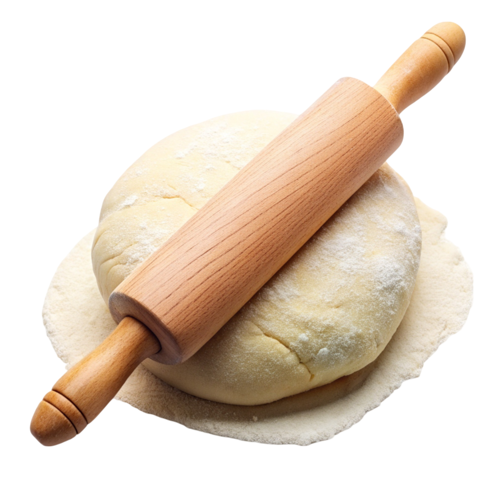
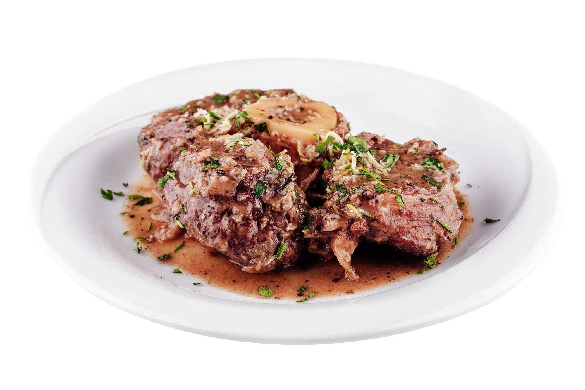
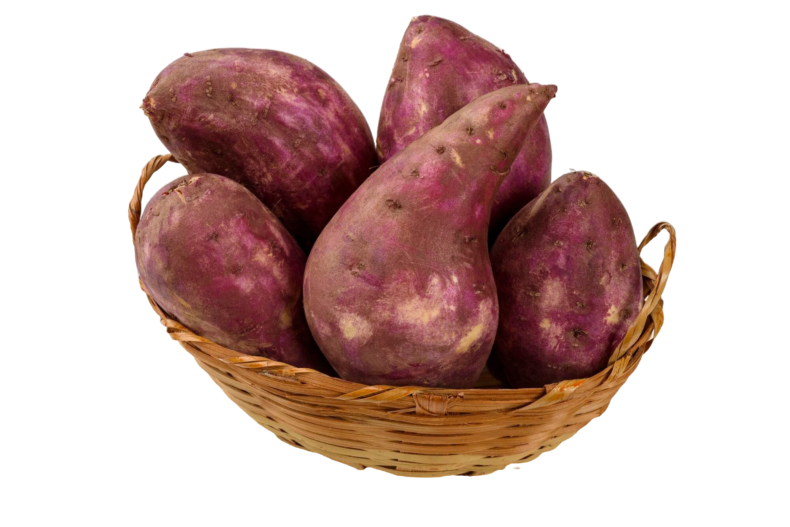

Dicas de Alimentação
Sempre consulte um veterinário antes de introduzir novos alimentos na dieta do seu cachorro!
10 Alimentos Nocivos para Cães
Chocolate
Contém teobromina, que é tóxica para os cães.Cebola e Alho
Podem danificar os glóbulos vermelhos dos cães, levando à anemia.Uvas e Passas
Podem causar insuficiência renal aguda.
Abacate
Contém uma substância chamada persina, que pode ser tóxica em grandes quantidades.Álcool
Mesmo pequenas quantidades podem ser perigosas, causando intoxicação.Cafeína
Presente em café, chá e algumas bebidas energéticas, é tóxica para os cães.Nozes
Algumas, como as nozes de macadâmia, podem causar fraqueza e letargia. Massa Crua
Pode fermentar no estômago e causar sérios problemas.
Carne Crua ou Mal Cozida
Risco de bactérias como Salmonella.Doces e Produtos com Xilitol
O xilitol pode causar uma queda rápida nos níveis de açúcar no sangue e danos ao fígado.10 Alimentos Não Nocivos para Cães
Carnes Cozidas
Como frango e carne bovina, desde que sem temperos.
Arroz e Macarrão
Cozidos e simples, são boas fontes de carboidratos. Batata-Doce
Cozida e sem temperos, é nutritiva.Vegetais
Cenouras, brócolis e abóbora, desde que bem cozidos e cortados em pedaços pequenos.
Frutas
Maçãs (sem sementes), bananas e mirtilos são ótimas opções.Iogurte Natural
Em pequenas quantidades, é uma fonte de probióticos.